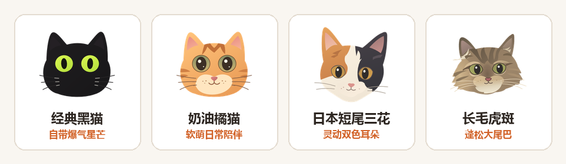
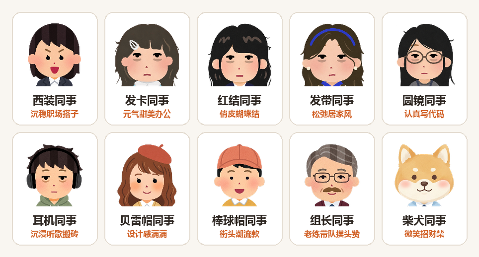
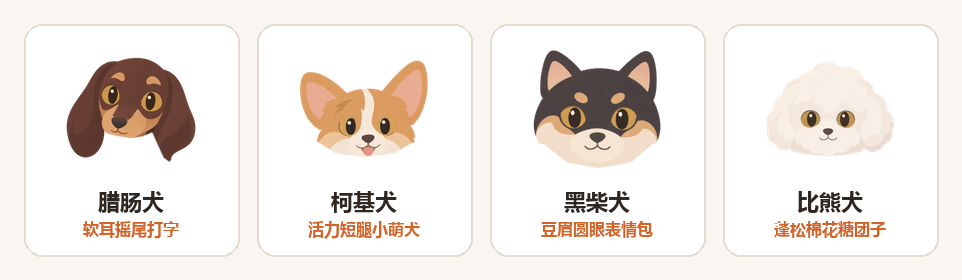
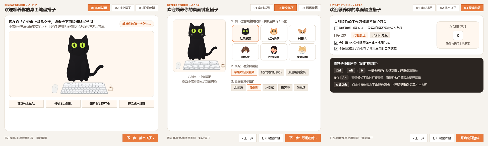
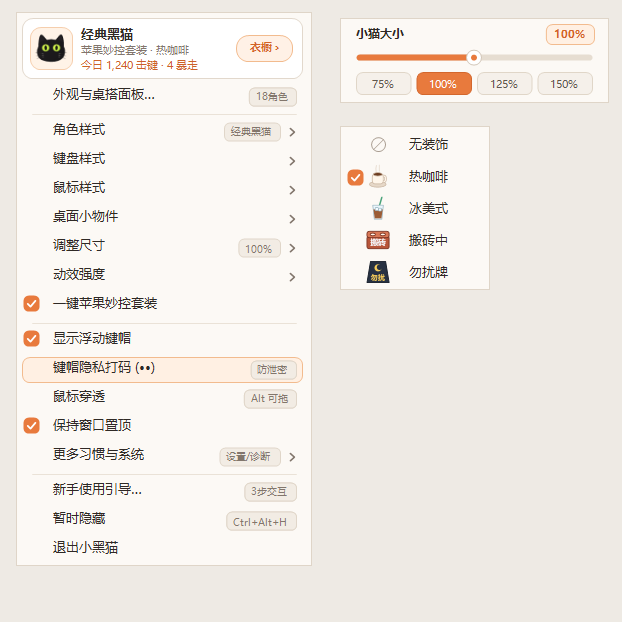

一只在屏幕角落陪你敲键盘、点鼠标、还会提醒喝水的桌面伙伴
支持 Windows 7 SP1 / 10 / 11 与 macOS 11+（Apple Silicon & Intel 通用）
首次打开即赠三步交互引导；已安装用户也可在菜单内点击「检查更新…」自动升级。
4 只小猫 + 10 位职场同事 + 4 只摇尾小狗，搭配 5 套键鼠与 4 款桌面小物件随心切换

🐱 小猫组：经典黑猫（默认）、奶油橘猫、日本短尾三花、长毛虎斑——高速连打触发连击爆气与鞭腿特效

👔 职场同事组（10 位）：西装、发卡、红结、发带、圆镜、耳机、贝雷帽、棒球帽、组长、柴犬——摸头有互动，工位摸鱼两不误

🐶 萌犬组：腊肠犬、柯基犬、黑柴犬、比熊犬——丝滑手臂动画与动态摇尾节奏
全面升级 60 / 120 / 144+ FPS 垂直同步渲染、macOS 连续摇尾曲线与新手互动引导

📖 三步交互式新手引导：首次启动即可当场试敲、挑选首发搭子与桌角摆件，并掌握全部快捷键

✨ 全新定制菜单栏：内置角色名片卡、今日击键与暴走统计、`75%–150%` 快捷缩放滑轨与手绘桌搭菜单图标
实时 0.5x 预览挑选 18 位伙伴、5 套键盘/鼠标，以及热咖啡 ☕、冰美式 🧊、搬砖中 🧱、勿扰牌 🌙 摆件。
Windows 按 Ctrl+Alt+H（Mac 按 ⌃⌥H）一键隐身/恢复；开启鼠标穿透后，按住 Alt / ⌥ 即可临时拖动与右键。
录屏/共享屏幕时开启隐私打码，浮动键帽自动变为 ••；玩全屏游戏或看视频时自动隐藏，专注 45 分钟温柔提醒喝口水 ☕。
本软件为开源免费个人项目、未做商业签名，下载和安装时的「风险提示」均为误报，按下面操作即可
Ctrl+J 打开下载记录，右键该文件 →「保留危险文件」。Ctrl+Alt+H 一键隐藏/显示；开启穿透后按住 Alt 可临时拖动位置或右键。Control+Option+H 快速隐藏，通过顶部菜单栏爪印图标恢复；穿透时按住 ⌥ Option 可临时拖动。macOS 使用通用 `.pkg` 安装器，Windows 7 SP1 需确认运行环境
点击上方下载按钮，得到 键盘小黑猫-1.13.3-macOS通用安装包.pkg 文件（通常在「下载」文件夹中）。
双击 .pkg 文件打开安装向导，依次点击「继续」→「安装」，输入你的开机密码（或 Touch ID）授权。
两种放行方式：
① 打开 系统设置 → 隐私与安全性，在底部找到关于「键盘小黑猫」的拦截提示，点击 「仍要打开」；
② 或在终端执行：xattr -d com.apple.quarantine ~/Downloads/键盘小黑猫-1.13.3-macOS通用安装包.pkg 后双击安装。
首次打开后按引导提示在 系统设置 → 隐私与安全性 → 输入监控 中勾选「键盘小黑猫」，即可实时联动全局键鼠。
.pkg →「打开」。
.exe 安装包运行即可；若 SmartScreen 弹出「已保护你的电脑」，点「更多信息」→「仍要运行」。